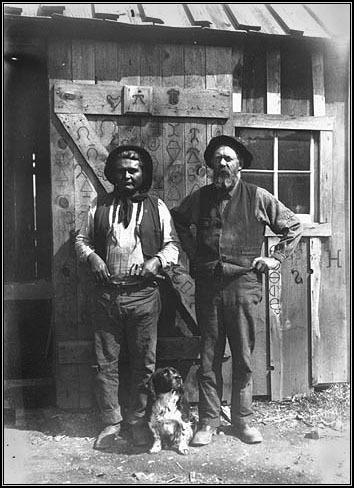

The Blacksmith and His Colville Indian Helper
|
Colville apprentice and blacksmith with dog in front of
blacksmith shop, Nespelem, Colville Indian Reservation, Washington, ca. 1900-1910. The brands
on door belong to horse-owning Indians. Photograph by
Edward H. Latham. University of Washington Libraries. Negative Number: NA961 |
|
During the long period of US-Indian Treaties,
the United States government would often agree to pay for a blacksmith to render services to
the Reservation Indians. We see from the 18 September 1823 treaty with the Florida Tribes of
Indians, this provision;
“... and the United States further stipulate, as an evidence of their humane policy
towards said tribes, who have appealed to their liberality, to allow for the establishment
of a school at the agency, one thousand dollars per year for twenty successive years; and
one thousand dollars per year, for the same period, for the support of a gun and blacksmith,
with the expenses incidental to his shop ...” and from the 24 March 1832 treaty with the
Creek Indians, we see this provision: “As soon as half their people emigrate, one
blacksmith shall be allowed them, and another when two-thirds emigrate, together with one
ton of iron and two hundred weight of steel annually for each blacksmith.--These blacksmiths
shall be supported for twenty years.” Even as early as 1809, Thomas Jefferson wrote to James Madison regarding the establishment of an Indian School; “... to place in the farm house a farmer (a laborer) of proper character to cultivate the farm with the aid of the Indian lads for the support of the institution, and to place on the same land the blacksmith & carpenter, also would have Indian apprentices under them.” Since the United States was in the business of pacifying, controlling, and containing the Indians in a non-nomadic, agrarian situation, it was necessary to support on-site blacksmith. Farming needs a blacksmith! Usually the blacksmith shop was built on US government land (on a US owned treaty reserve) and there Indians could work as helpers. Some of these Indian helpers became compentent blacksmiths. |